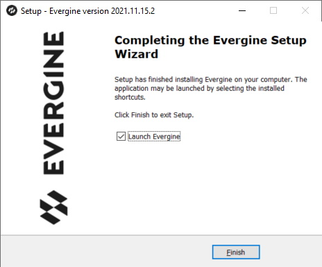
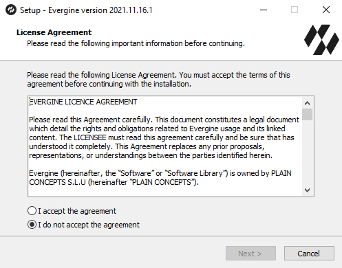
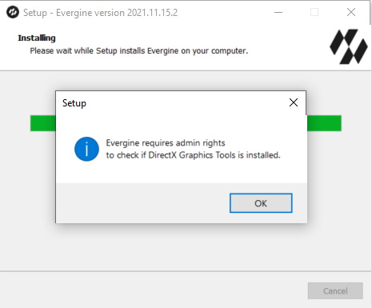
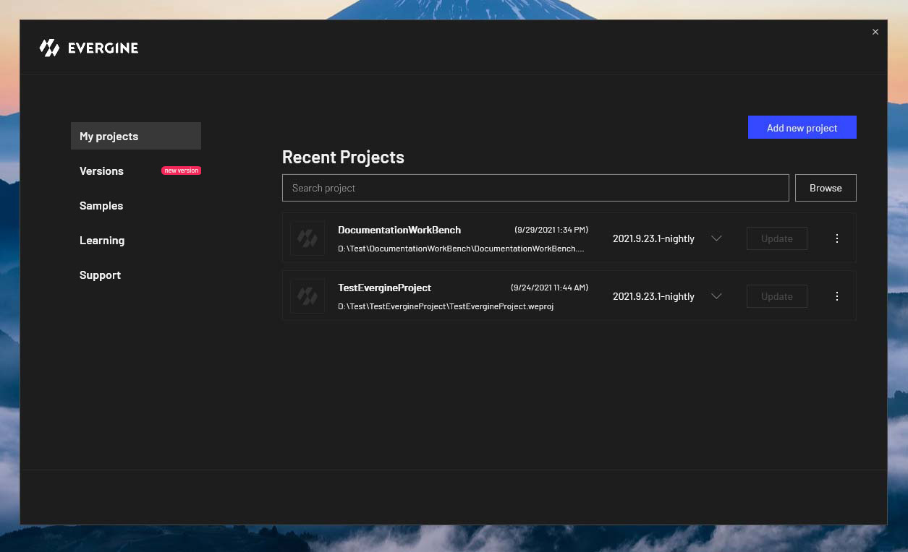

Install Evergine

Evergine installs with a single setup program that adds the Evergine Launcher to your computer. From the Launcher you then download Evergine versions, create projects and open them in Evergine Studio. This page lists what your machine needs, walks through the installer, and explains how to fix the most common setup problems.
Requirements
The installer checks the .NET SDK and Visual Studio before it copies any file, and stops with a message if one is missing. Install them first.
| Requirement | Minimum | Notes |
|---|---|---|
| Operating system | Windows 10 or Windows 11, 64-bit | Evergine Studio and the Evergine Launcher are Windows applications. Your projects can still target Android, iOS, the web and other platforms. |
| .NET SDK | .NET 10 SDK, version 10.0.201 or later (x64) | Download it from dotnet.microsoft.com. |
| Visual Studio | Visual Studio 2026 (version 18.0 or later) with the .NET desktop development workload | Needed to build and debug your projects. Add the ASP.NET and web development workload for Web profiles, and .NET Multi-platform App UI development for Android, iOS and MAUI profiles. |
| GPU | Direct3D 12 with feature level 12_2 | Evergine Studio and new Windows projects render with DirectX 12. On a GPU without feature level 12_2, use the DirectX 11 or Vulkan backend (see Troubleshooting). |
| Permissions | A standard user account | Evergine installs for the current user. Administrator rights are only requested to add the Windows Graphics Tools optional feature. |
Run the installer
Download the Evergine installer (EvergineSetup.exe) from the Evergine download page.
Run the installer. It shows the license agreement (EULA) that defines the licensing terms of the engine. Accept it to continue:

Choose the optional tasks: a desktop shortcut, and associating
.weprojproject files with Evergine so that double-clicking a project opens it.The installer then checks the DirectX Graphics Tools, the optional Windows feature that provides the DirectX debug layer. Adding it needs administrator rights, so Windows asks for permission:

Note
If you decline, Evergine still installs. You can add it later from the Optional features page of Windows Settings, where it is listed as Graphics Tools. Without it, the graphics validation layer is not available.
When the wizard finishes, keep Launch Evergine checked and click Finish to open the Evergine Launcher.
Evergine Launcher
The Evergine Launcher is a standalone Windows app. From it you install and remove Evergine versions, create and open projects, update projects to a newer version, and find samples, learning materials and support.

Troubleshooting
The installer asks for Visual Studio
The message requires VisualStudio >= 2026 with .NET desktop development workload installed means the installer did not find Visual Studio 2026 with MSBuild. Install Visual Studio 2026 (any edition, including Community) with the .NET desktop development workload, then run the Evergine installer again. The installer opens the Visual Studio download page for you.
The installer asks for .NET
The message requires Microsoft .NET >= v10.0.201 means no .NET 10 SDK of that version or later is installed. Install the latest .NET 10 SDK for x64, not only the runtime, and run the Evergine installer again. To see which SDKs you have, run dotnet --list-sdks in a terminal.
Evergine Studio or the application cannot create a DirectX 12 device
The error Couldn't find GPU device that supports feature level 12.2 means the GPU or its driver does not support Direct3D feature level 12_2. First update the GPU driver. If the error remains:
- Evergine Studio: open Settings > Preferences, set Editor backend to DirectX11 or Vulkan, and restart Evergine Studio.
- Your application: add the Windows (DirectX11) or Windows (Vulkan) platform to the project and run that profile. See Manage profiles.
A project does not open from the file explorer
Double-clicking a .weproj file only opens Evergine when you chose the file association during installation. Run the installer again and select it, or open the project from the Evergine Launcher.